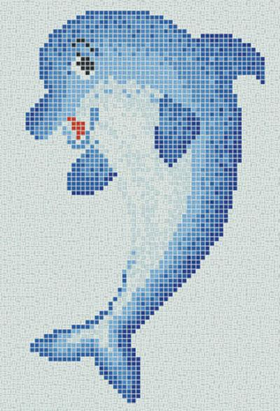

《斩赤红之瞳》
斩赤红之瞳 一个国家就如同人会逐渐腐朽，走向毁灭的一天，披著人皮的鬼魅魍魉嚣张跋扈四处横行，天若无法制裁邪恶，我等全员职业杀手团将会于黑暗之中给予消逝——帝历 1024 年，出身在因帝国遭受欺压的村庄少年 塔兹米 ，怀着拯救村庄的希望，与青梅竹马共同以..

《哪吒之魔童降世》
哪吒之魔童降世是由饺子执导兼编剧，吕艳婷、囧森瑟夫、瀚墨等参与配音的动画电影，于2019年7月26日在中国内地上映。[1] 该片改编自中国神话故事，讲述了哪吒虽“生而为魔”却“逆天而行斗到底”的故事。
头号玩家

影片故事发生在2045年，遭遇能源危机的世界处于崩溃边缘，人类选择在名为“绿洲”的VR游戏中寻找慰藉。但游戏创始人的遗嘱打破了世外桃源的宁静：只要玩家寻获他设置的彩蛋，就能接手"绿洲"成为新的世界首富。吸引全世界参与的大冒险就此展开，男主角韦德·沃兹(Wade Watts)也投身其中，但等待他的夺宝之旅不仅神秘凶险，还裹挟巨大阴谋。
韦德·沃兹（泰尔·谢里丹 饰） 网名叫Parzival，一名普通的玩家，尽管出身于贫民窟，没有钱给自己买先进装备，但他还是凭借着聪明智慧和对80年代流行文化的丰富知识先声夺人，率先解开线索，顺利闯关。为了生存，韦德必须赢得这场寻宝大战。
萨曼莎·库克（奥利维亚·库克 饰） 韦德的爱慕对象，在现实中的真身是加拿大的一个博主，网名是Art3mis.萨曼莎·库克在游戏中的化身，韦德的爱慕对象，“绿洲”彩蛋猎人中的传说，游戏水平高超，坚韧、无畏，也是少有的现实与虚拟中人物性格和特点都极为相似的人。
艾奇（丽娜·维特 饰） 现实中是豪爽的黑人女孩，不想因为性别被别人忽视能力，所以在游戏中选择成为男性，是“绿洲”最好的机械师，身材巨大，幽默风趣，是帕西瓦尔最好的朋友。
大东（森崎温 饰） 现实中是一个信仰禅宗的年轻人，“绿洲五强”之一，强大的日本武士，熟知剑法和功夫。
修（菲利普·赵 饰） 现实中是11岁的少年，讨厌因为年龄被别人评判轻视，想要表现得像成年人一样，“绿洲五强”之一，拥有与年龄不相称的勇敢与成熟。
深圳小梅沙
小梅沙是位于深圳东部大鹏湾绵长的海滩,素有“东方夏威夷”美誉.三面青山环抱,一面海水蔚蓝,一弯新月似的沙滩镶嵌在蓝天碧波之间.小梅沙环境幽雅,空气清新,秀山美水给小梅沙增添了许多灵秀之气,慷慨的大自然把她造化成都市人理想的海滨旅游度假胜地。